Open Source Software PH
Open Source Software PH (OSSPH) is a developer-led initiative to grow the community of developers building open source software across the Philippines. Our goal is to help open source maintainers to get proper support for their projects. Our future plans include virtual meetups, training for new OSS maintainers, connecting them with mentors and companies that can potentially support them.
Our Partners
- Partners
-

-